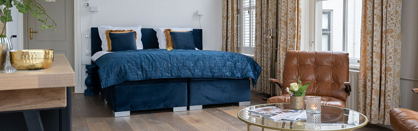

Vue sur le port
Kamer aan de haven
Uitzicht op het haventje van Zaltbommel. Met eigen badkamer en balkon.

Twee comfortabele kamers op de eerste verdieping van de villa, elk met eigen badkamer en balkon. Na het diner hoef je alleen de trap op.
Vue sur le port
Uitzicht op het haventje van Zaltbommel. Met eigen badkamer en balkon.
Vue sur la forêt
Uitzicht op het groen naast de villa. Met eigen badkamer en balkon.
In totaal 42 m², met een aparte, luxe badkamer. Bij mooi weer geniet je op het balkonnetje van de ondergaande zon.

Na je overnachting brengen we het rijk gevulde ontbijtplateau boven. Een klopje op de deur en het staat klaar.
In overleg tussen 09:00 en 09:30. In het weekend desgewenst een half uur later.
Vertrek je vóór 08:30, dan staat je ontbijt klaar in de minibar. Andere wensen en tijden in overleg.
Via Bed and Breakfast zie je meteen welke data beschikbaar zijn en boek je direct.
Bel 0418 51 40 70 of mail naar chambres@la-provence.nl. Je reservering is officieel na onze persoonlijke bevestiging.
Dineren in het restaurant? Reserveer dan meteen een tafel op dezelfde avond.
Per kamer per nacht, exclusief ontbijt en toeristenbelasting
Per persoon
Per persoon per nacht
Per persoon, exclusief toeristenbelasting
Per persoon, exclusief toeristenbelasting
Zakelijke gast? Bekijk de tarieven voor eenpersoonsgebruik.
Een reisverzekering kan in bepaalde situaties vergoeden, bijvoorbeeld bij ziekte. Twijfel je over je boeking? Neem dan vroegtijdig contact op, dan helpen we je zo mogelijk verder.
Voor jezelf, of als cadeau voor iemand die je iets bijzonders gunt. Prijzen op basis van twee personen per kamer.
Alles van arrangement 1, met daarbij:
Jij bepaalt het aantal nachten, personen en de inhoud van het arrangement. Met extra's op de kamer, zoals een borrelgarnituur, champagne of een andere verrassing. We maken er een prachtig ingepakt presentje van.
Bestel het al bij je boeking, dan staat het bij aankomst klaar in de minibar. Tijdens je verblijf bestellen kan ook: graag uiterlijk 21:00 uur voor dezelfde avond, tijdens de openingstijden van het restaurant. Voor andere wijnen van de wijnkaart gelden voor hotelgasten gereduceerde prijzen.
Op je kamer vind je een map met aanvullende informatie en onze telefoonnummers. Is er iets, laat het ons weten.
Uitchecken kan doordeweeks tot 10:00 uur en in het weekend tot 11:00 uur. Je kunt de sleutel in je kamerdeur laten zitten.
Wandelen en fietsen, evenementen, mooie winkeltjes, kunst en cultuur. Meer weten? Tourist Info Bommelerwaard zit vlakbij, op Markt 10 in Zaltbommel, telefoon (0418) 64 87 74, en op beleefbommelerwaard.nl. Kijk vooraf even of er iets gewijzigd is aan een route of openingstijden.
Op de dakgoten van tientallen huizen in het centrum zitten gootspoken, die iets vertellen over de bewoners, het pand en de beeldhouwkunst van Joris Baudoin. 3 km.
In circa 1,5 uur langs de Sint-Maartenskerk, het Stadskasteel en de huizen van de familie Philips en Fiep Westendorp.
Het buitengebied van Nederhemert, met wielen, kades, een schans en een kasteel. 10 of 16 km.
Het rivierengebied van Zaltbommel, oude kaden en vochtige hooilanden. 10 of 14 km.
Weidse vergezichten rond Ammerzoden en Well. 6 of 11 km.
Langs de Nieuwe Hollandse Waterlinie, Waal en Linge. 6 of 15 km.
20, 30 of 42 km door uiterwaarden, over rivierduinen en zandstranden.
Knooppuntenroute van 63 km. Start bij knooppunt 66, vlak bij ons pand.
44 km, onderdeel van de driedaagse Bloesemroute. Ook vanaf knooppunt 66.
Tip: vanuit 'La Provence' loop je zo de Stadswallen in, teruggebracht in de Engelse landschapsstijl van stadsarchitect François de Virieu (1789-1876).
Nieuwstraat 2, Zaltbommel
Kerkplein 1, Zaltbommel
Nonnenstraat 5-7, Zaltbommel
Kasteellaan 1, Ammerzoden
Kasteellaan 11, Nederhemert-Zuid
Loevestein 1, Poederoijen
Zandweg 17, Ammerzoden
Markt 4-6, Zaltbommel
Omhoeken 17, Zaltbommel
Nonnenstraat 73, Zaltbommel
Nieuwe Tijningen 109, Zaltbommel
Het Straatje, Zaltbommel
Met de chambres erbij kunnen zakelijke gasten de hele dag bij ons terecht: vergaderen in de orangerie, een zakendiner en een kamer voor de nacht.
Zakelijke mogelijkheden